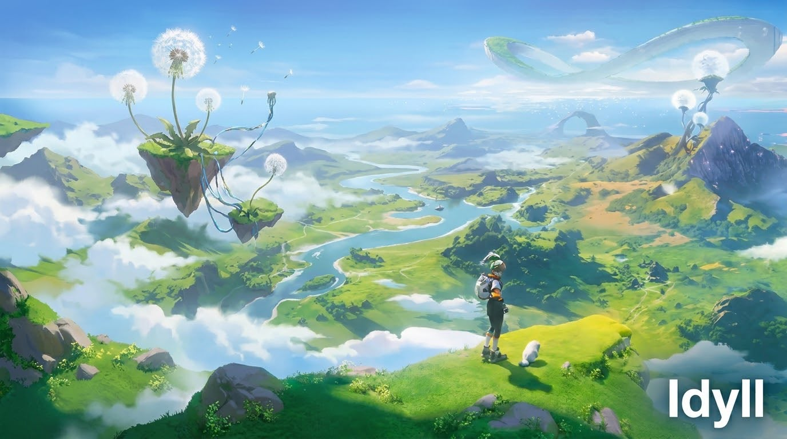
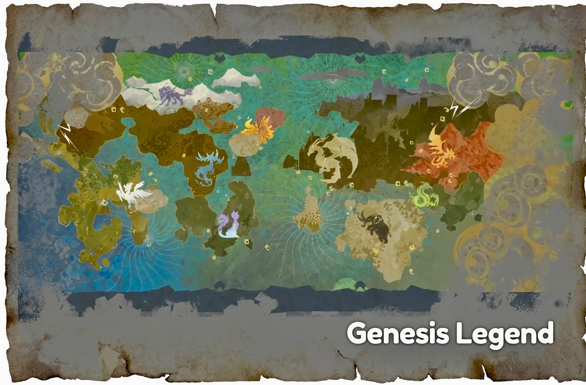
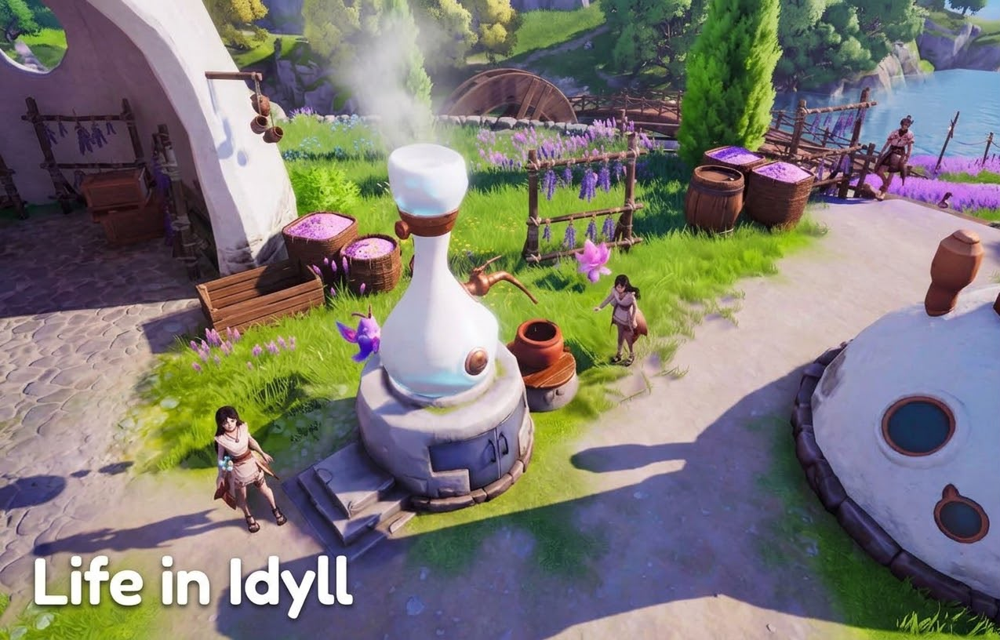
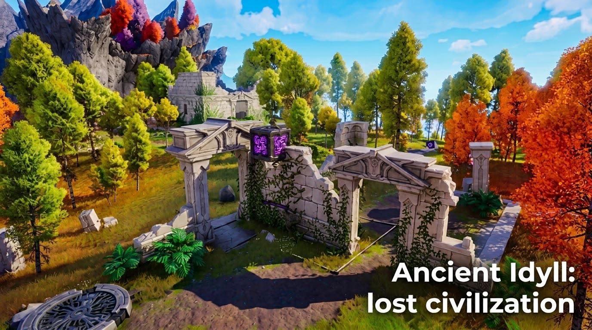
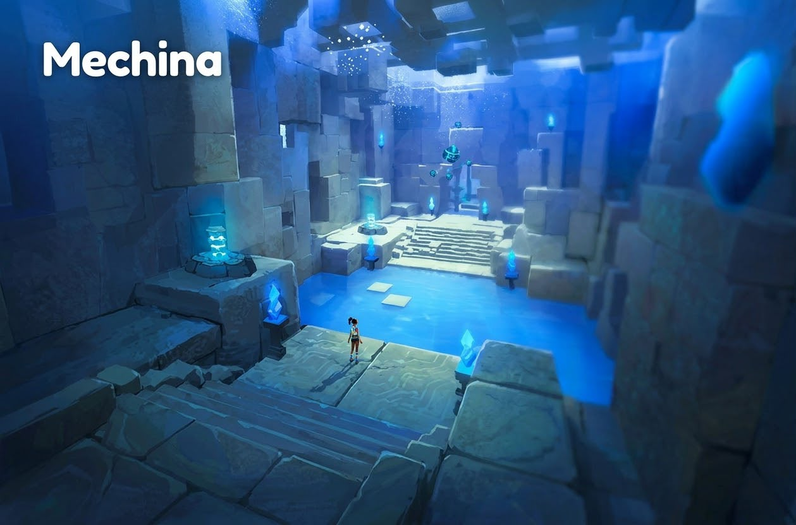
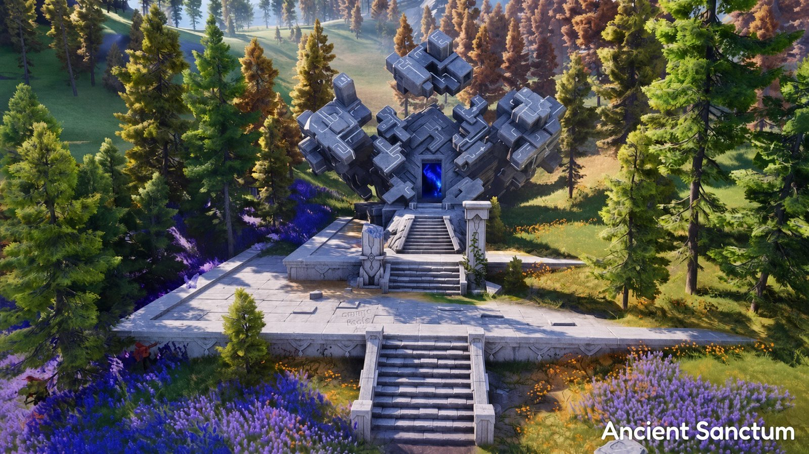

Torniamo, ora, a ciò che sta sotto Astra. Dopo aver detto addio alla Terra perduta, l'umanità trovò Idyll: un continente splendido e vitale, con Aniimo in ogni angolo. A differenza della frenesia moderna di Astra, qui la natura è rimasta intatta.
Si narra che nove Aeon abbiano creato insieme Idyll, ognuno a protezione di un dominio diverso, e che sotto la loro guida Idylliani e Aniimo vivano in armonia.

Gli Idylliani, di cuore semplice, costruiscono insediamenti e sviluppano le loro attività con l'aiuto delle creature.

Ma prima di loro c'era stata un'altra civiltà. L'Antica Idyll fu gloriosa e ora giace in rovina, e di lei restano soprattutto le Mechina: i misteriosi meccanismi e le strutture che i suoi abitanti eressero sotto la guida degli Aeon Primi. Erano dispositivi magici capaci di incanalare l'energia delle Vene, e si dice che il loro scopo originario fosse riparare le Vene danneggiate. A farle ancora funzionare sono i Santuari, i dungeon-puzzle del gioco, costruiti sopra i nodi principali delle Vene e sparsi per tutto il continente: se ne contano diciassette.


Entrare in un Santuario è come entrare in un luogo che non vuole ospiti. L'instabilità energetica al suo interno impedisce di portare con sé la propria squadra, così bisogna svegliare una statua sigillata e fondersi, per un tempo limitato, con le abilità elementali di un Aniimo nativo del dungeon: elettricità, ghiaccio, magnetismo. Poi si risolvono i puzzle: blocchi polarizzati e circuiti elettrici e magnetici da collegare con la telecinesi, per riattivare i flussi di energia. In fondo a ogni Santuario c'è il Tesseract, un nucleo cubico: quando lo si attiva, le Mechina si allineano, la Vena viene riparata e si ottiene l'Ambra Lumin. Ma di quali Vene stiamo parlando? Ce ne occuperemo nel Capitolo 6. Per ora basta sapere che questo continente è popolato da creature straordinarie, e che da loro dipende quasi tutto.
